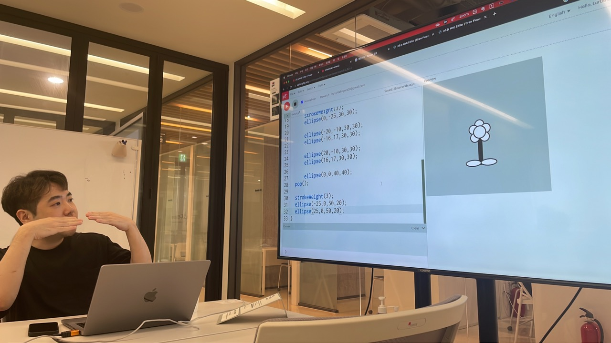
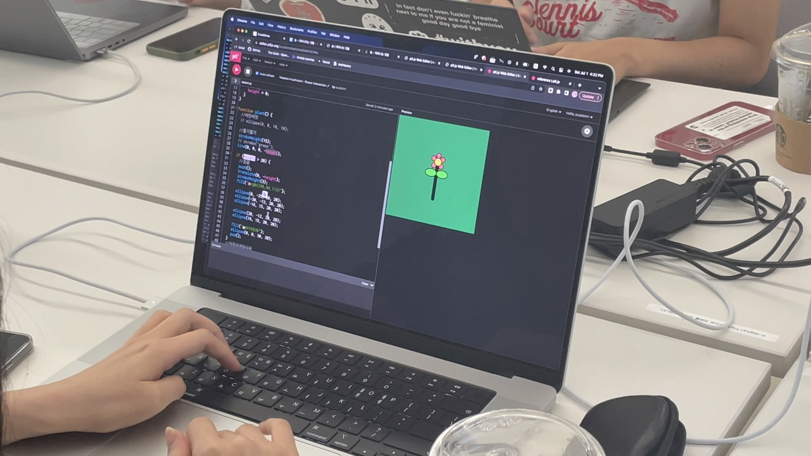
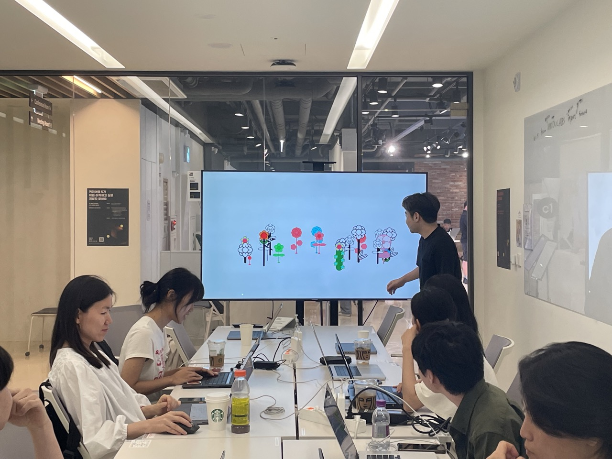
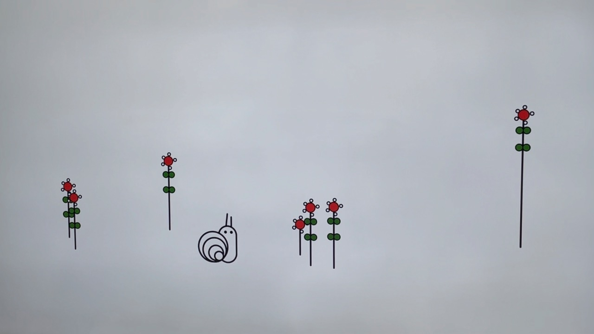

JavaScript 의 기초와 함께 p5js 에서 도형을 그리는 법을 익히고 함수호출 시점과 애니메이션의 관계를 살펴봅니다. 함수가 호출될때마다 누적되는 값에 따라 변화하는 그래픽을 구현하고 각자 디자인한 식물을 모아 함께 숲을 만드는 것이 이번 워크샵의 최종 목표입니다.




[ 진행시간 ] 총 4시간 30분 13:00 - 16:00 아트웍 테크닉 교육 16:00 - 17:00 개별 작업 17:00 - 17:30 함께 감상하기
[ 워크샵 구성 ] 1. p5.js 소개 2. p5.js 에서 도형 그리기 (JavaScript 코딩 배우기) 3. 꽃 / 나무 그리기 4. 애니메이션 추가하기 5. 인터랙션에 따라 자라나는 식물 만들기 6. 자신만의 식물 디자인 하기 7. 가상의 숲에 식물 디자인을 업로드해 함께 숲 만들기